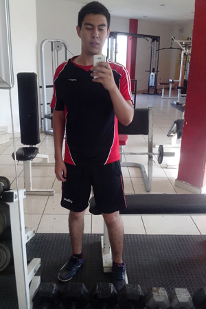
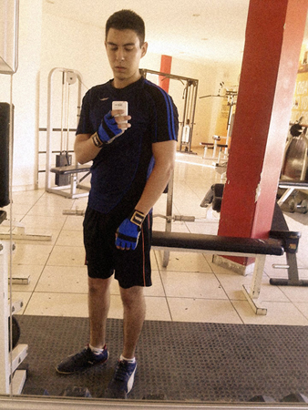

Mi físico
Estatura: 1.78cm
Peso: 74kg.
Color de ojos: Negros
Cabello: Negro y lacio
Biotipo: Mesomorfo
Entrenamiento físico
 Foto del primer dia de gym Marzo 2016 Foto del mes 8 en el gym Noviembre 2016
Mi desarrollo
Cuando estaba muy pequeño tenia sobrepeso, siempre fui alto en comparación con mis amigos de mi edad, a los 9 años comencé a bajar un poco de peso y a crecer más eso me ayudo ya que no me veía tan obeso. A los 13 años perdí mucho peso más, no me parecía nada al niño que era, era muy delgado en extremo ya no comía tanto comida chatarra a cono lo hacía en mi niñez y a los 17 años comencé a subir unos kilos demás, ya me miraba mejor porque mi peso era proporcional a mi estatura y hace poco comencé una vida de ejercitamiento.